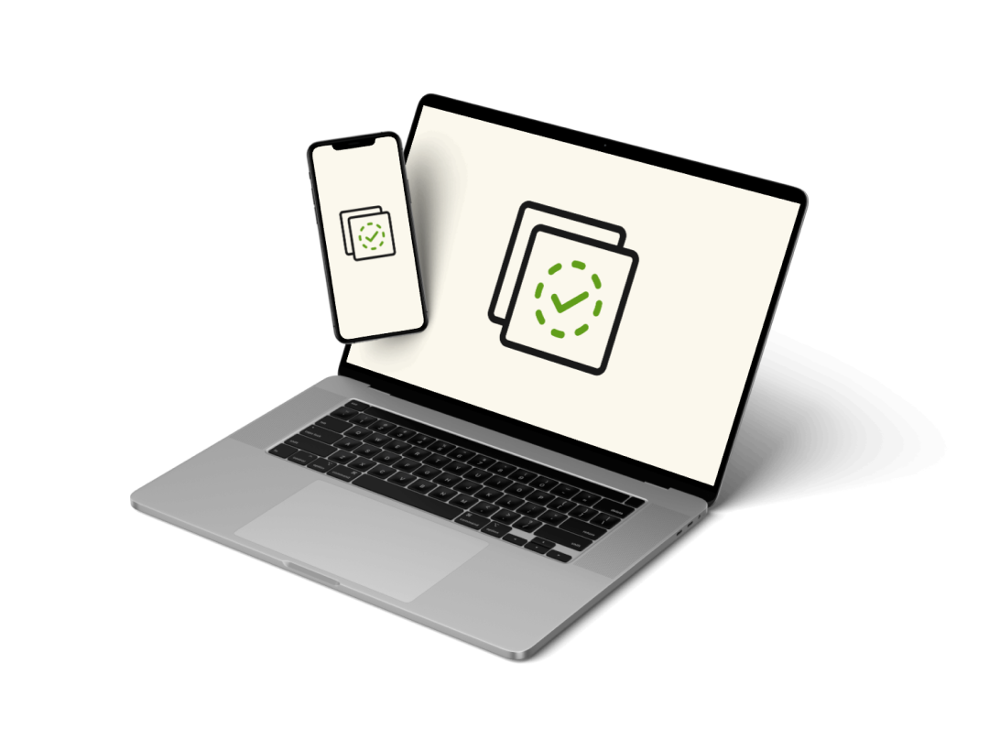

Retrieve Your University Documents Anytime, Anywhere
Transcripts, diplomas, certificates and more - all in one place
Secure
Bank-level encryption for all your documents
Mobile-Friendly
Access from any device

Fast
Get your digital documents within minutes
andYour hard-copies within 48 hours
UniDocs is a digital document retrieval system designed for university students. This secure, mobile-friendly platform enables users to request official transcripts, diplomas, and certificates, track request statuses, and manage payments through integrated gateways like MoMo. Featuring user profiles and verification, UniDocs streamlines universities' administrative processes while ensuring data privacy and easy access to academic documents anytime, anywhere.